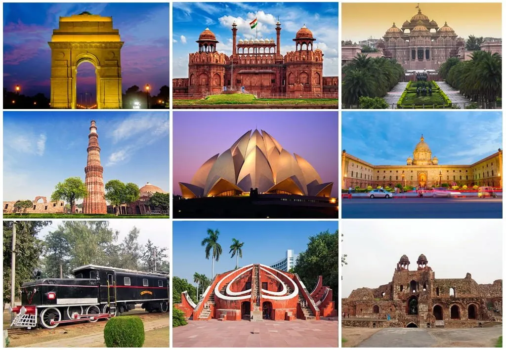
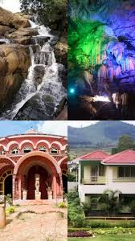
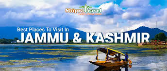
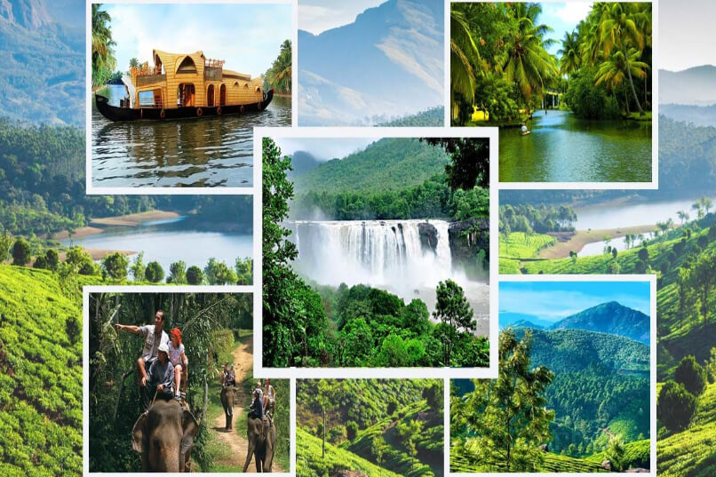

Flying in india
To travel is to live
Travel is my therapy
|  |
 |
|  |
 |
About
Travelling is a transformative experience that broadens perspectives, offers new cultural insights, and creates lasting memories. It's a way to escape the ordinary, explore the world, and learn about oneself and others. Whether for leisure, education, or business, travel provides opportunities for personal growth and a deeper appreciation for the world.Key Features of a Travel Website: User-Friendly Interface: A clear and intuitive design makes it easy for users to navigate and find what they need. Comprehensive Search Functionality: Allowing users to search for flights, hotels, tours, and activities based on location, dates, and other criteria. Booking and Payment Integration: Providing a secure and seamless booking process with multiple payment options. Destination Information and Guides: Offering detailed information about destinations, including attractions, activities, and transportation options. User Reviews and Ratings: Providing social proof and allowing users to share their experiences. Responsive Design: Ensuring the website works well on various devices, including desktops, tablets, and smartphones. Mobile-Friendly App: Many travel websites also offer mobile apps for on-the-go booking and travel planning. Examples of Travel Websites: Online Travel Agencies (OTAs): Booking.com, Expedia, Tripadvisor, Kayak, Priceline. Travel Blog and Content Platforms: Lonely Planet, Love Travel. Destination-Specific Websites: Ministry of Tourism websites for various countries, e.g., the Ministry of Tourism, India. Additional Considerations: Content Marketing: Creating engaging and informative content, such as blog posts, articles, and videos, to attract and retain users. SEO Optimization: Ensuring the website is optimized for search engines to improve its visibility. Social Media Integration: Using social media to promote the website and engage with users.
Video
Contacts us
📞 +91 9988776655
✉ travelling@gmail.com